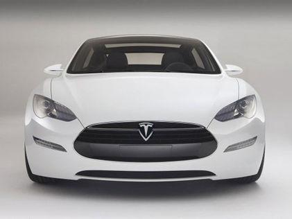
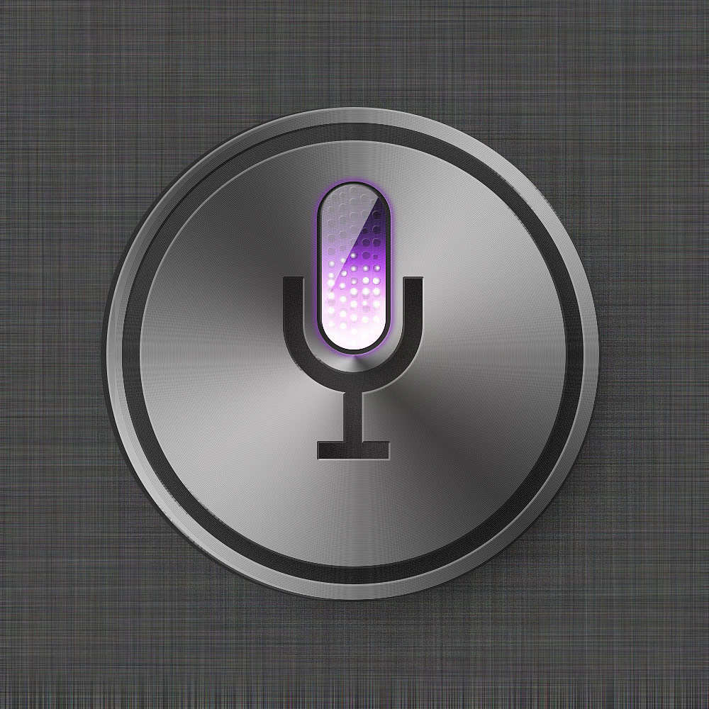

概述
人工智能应用（Applications of artificial intelligence）的泛围很广，包括：医药，诊断，金融贸易，机器人控制，法律，科学发现和玩具。许多千种人工智能应用深入于每种工业的基础。90年代和21世纪初，人工智能技术变成大系统的元素；但很少人认为这属于人工智能领域的成就。
交通运输

特斯拉(Tesla)是一家美国电动车及能源公司，产销电动车、太阳能板、及储能设备。其公司生产的特斯拉汽车是全球最早出现的新能源汽车，抛弃了传统的油耗，使用电源为唯一动力，使其更加环保。后推出的无人驾驶系统，让世界眼前一亮，首次在汽车上出现了人工智能。
智能助手

Siri是苹果公司在其产品iPhone4S，iPad 3及以上版本手机和Mac上应用的一项智能语音控制功能。Siri可以令iPhone4S及以上手机（iPad 3以上平板）变身为一台智能化机器人，利用Siri用户可以通过手机读短信、介绍餐厅、询问天气、语音设置闹钟等。
2017年苹果WWDC开发者大会上，Siri的更新当中，加入了实时翻译功能，支持英语、法语、德语等语言，未来将陆续进行支持，与此同时，Siri的智能化还进一步得到提升，支持上下文的预测功能，类似此前发布的谷歌助手，用户甚至可以用Siri作为Apple TV的遥控器。
未来，就在眼前